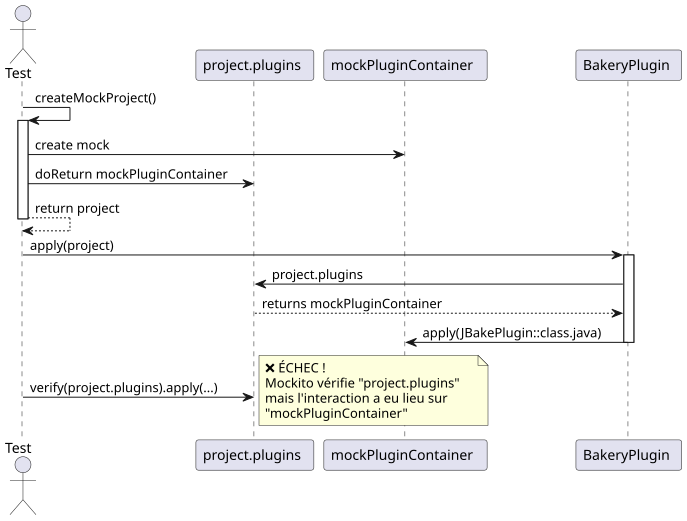
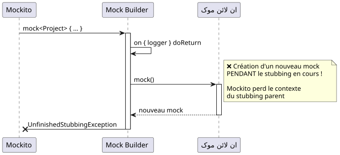
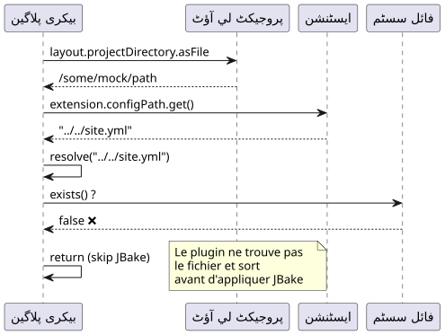
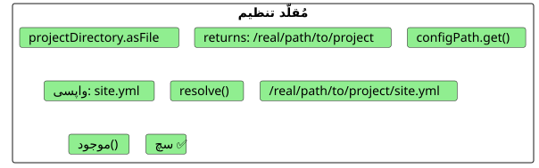
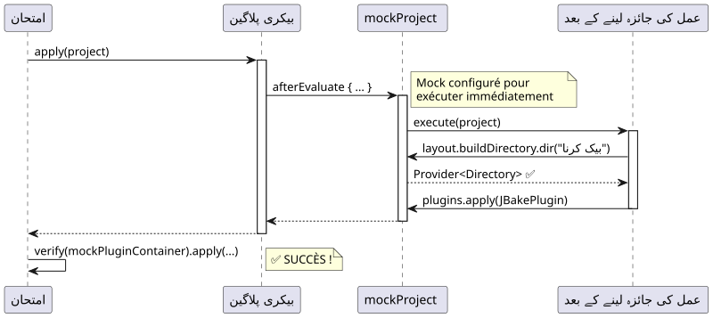
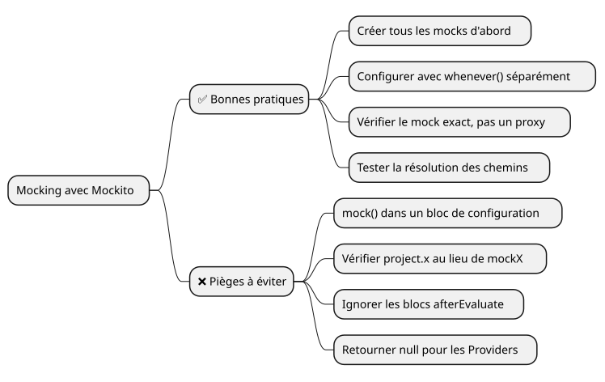
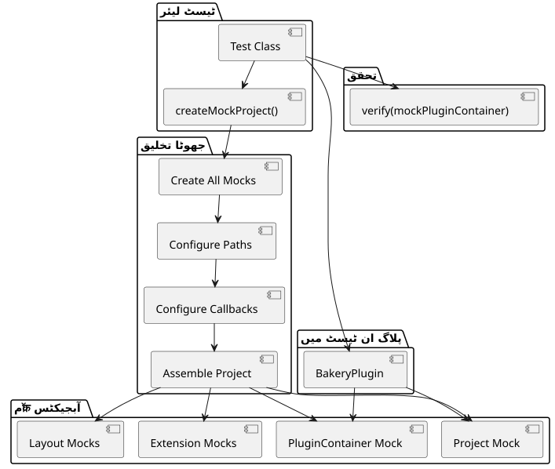

Mockito کی ڈیبگنگ: Gradle پلگ ان ٹیسٹ میں "Wanted but not invoked" غلطی کو حل کرنا
شائع شدہ: 17 November 2024
معرفی
Gradle پلاگ‑ین کی ترقی کے دورانبیکریمیری JBake بلوگ کے لیے، میں نے ایک ظاہراً سادہ مسئلے کا سامنا کیا : ایک یونٹ ٹیسٹ جو غلطی کے ساتھ ناكام ہو رہا تھا`Wanted but not invoked`. جو لگ رہا تھا ایک چھوٹا سا bug، درحقیقت Mockito اور Kotlin کے ساتھ mocking کی باریکیاں سمجھنے کے لیے ایک مثالی case study ثابت ہوا۔
اس مضامین میں، میں آپ کو ایک منظم ڈیBugging کے سفر پر لی جاتی ہوں، جہاں ہر حل ایک نئی مسئلے کا ظاہر کرتا ہے، اختیری حل تک
سیاق : Gradle Bakery پلاگین
بیکری پلاگین JBake کا ایک وریپر ہے جو استاتیک سائیٹوں کی شائع کرنے میں آسانی فراہم کرتا ہے۔ یہ اس کی سادہ ڈھانچہ ہے :
class BakeryPlugin : Plugin<Project> {
override fun apply(project: Project) {
val extension = project.extensions.create(
"bakery",
BakeryExtension::class.java
)
project.afterEvaluate {
if (!project.layout.projectDirectory.asFile
.resolve(extension.configPath.get()).exists()) {
println("config file does not exists")
} else {
// C'EST ICI QUE ÇA SE PASSE
project.plugins.apply(JBakePlugin::class.java)
val site = FileSystemManager.from(project, extension.configPath.get())
// Configuration de JBake...
}
}
}
}اسٹ ٹیسٹ جو ناكام تھا آسان:
@Test
fun `plugin applies jbake gradle plugin`() {
val project = createMockProject()
val plugin = BakeryPlugin()
plugin.apply(project)
verify(project.plugins).apply(JBakePlugin::class.java)
}غلطی :
Wanted but not invoked:
pluginContainer.apply(class org.jbake.gradle.JBakePlugin);
Actually, there were zero interactions with this mock.مشکل #1 : غلط میاک کی جانچ کریں
تشخیص

مسئلے: Mockito تعاملات کو ٹریک نہیں کر سکتا ہے پر`project.plugins`کیونکہ یہ صرف ایک getter ہے جو اصل mock واپس کرتا ہے`mockPluginContainer`. تصدیق کو Mock کی انسٹنس پر مستقیماً کرنا چاہیے۔
حل
تغییر`createMockProject()`دو اشیاء واپس کرنے :
private fun createMockProject(): Pair<Project, PluginContainer> {
val mockPluginContainer = mock<PluginContainer>()
val mockProject = mock<Project> {
on { plugins } doReturn mockPluginContainer
}
return Pair(mockProject, mockPluginContainer)
}اور ٹیسٹ کو موزوں بنائیں :
@Test
fun `plugin applies jbake gradle plugin`() {
val (project, mockPluginContainer) = createMockProject()
val plugin = BakeryPlugin()
plugin.apply(project)
// ✅ Vérification directe sur le bon mock
verify(mockPluginContainer).apply(JBakePlugin::class.java)
}مشکل #2 : UnfinishedStubbingException کا متسلسل
تشخیص
پہلی ترمیم لاگو کرنے کے بعد، ایک نئی خرابی ظاہر ہوئی :
UnfinishedStubbingException:
Unfinished stubbing detected here
Hints:
3. you are stubbing the behaviour of another mock inside
before 'thenReturn' instruction is completedمُشکِل کوڈ Mockito-Kotlin کی DSL سینٹیکس استعمال کر رہا تھا:
val mockProject = mock<Project> {
on { extensions } doReturn mockExtensionContainer
on { plugins } doReturn mockPluginContainer
on { logger } doReturn mock() // ❌ PROBLÈME ICI !
}
حل
تخلیق کریںتماممیکس (mocks) کو کسی بھی اسٹبنگ (stubbing) بلاک سے باہر رکھیں، پھر انہیں اس کے ساتھ کنفیگر کریں`whenever()`Please provide the text you would like me to translate.
private fun createMockProject(): Pair<Project, PluginContainer> {
// 1️⃣ Créer TOUS les mocks d'abord
val mockPluginContainer = mock<PluginContainer>()
val mockExtensionContainer = mock<ExtensionContainer>()
val mockLogger = mock<org.gradle.api.logging.Logger>()
val mockProject = mock<Project>()
// 2️⃣ Configurer les mocks séparément avec whenever()
whenever(mockProject.plugins).thenReturn(mockPluginContainer)
whenever(mockProject.extensions).thenReturn(mockExtensionContainer)
whenever(mockProject.logger).thenReturn(mockLogger)
return Pair(mockProject, mockPluginContainer)
}|
طلائی قانون: کبھی فون نہ کریں`mock()`مॉक کے کنفیگریشن بلاک کے اندر۔ مॉक کو پہلے بنائیں، پھر انہیں کنفیگر کریں۔ |
مشکل #3: تنظیمات فائل موجود نہیں
تشخیص
مستقیم mocks کے ساتھ بھی، ٹیسٹ ہمیشہ خراب ہوتا تھا کیونکہ پلگن کنفیگریشن فائل نہیں ڈھونڈ پاتا تھا :
// Dans BakeryPlugin.kt
if (!project.layout.projectDirectory.asFile
.resolve(extension.configPath.get()).exists()) {
println("config file does not exists")
return@afterEvaluate // ❌ Sort avant d'appliquer JBake !
}
حل
مآکوں کو اس طرح کنفیجر کر دیں تاکہ راستے کا حل کام کرے:
private fun createMockProject(): Pair<Project, PluginContainer> {
// ... autres mocks ...
val configFile = File("../../site.yml").canonicalFile
val projectDir = configFile.parentFile
// Configuration cohérente des chemins
whenever(mockConfigPathProperty.get()).thenReturn("site.yml")
whenever(mockProjectDirectory.asFile).thenReturn(projectDir)
// Maintenant : projectDir.resolve("site.yml") existe ! ✅
}
مشکل #4 : afterEvaluate اور NullPointerException
تشخیص
پلاگین JBake کو ایک بلاک میں لاگو کرتا ہے`afterEvaluate`اور رسالت پاتا ہے`buildDirectory.dir()`:
project.afterEvaluate {
// ...
project.tasks.withType(JBakeTask::class.java)
.getByName("bake").apply {
output = project.layout.buildDirectory
.dir(site.bake.destDirPath) // ❌ NPE ici !
.get()
.asFile
}
}الموك کا`buildDirectory.dir()واپس جا رہا تھا`null.
حل
ترファンا`afterEvaluate`جس کے لیے اسے فوراً چلا دیا جائے اور اسے مکمل طور پر کنفیگر کیا جائے`buildDirectory`: :
private fun createMockProject(): Pair<Project, PluginContainer> {
// ... autres mocks ...
val mockBuildDirectory = mock<DirectoryProperty>()
val buildDir = File(projectDir, "build")
// Mocker dir() pour retourner un Provider valide
whenever(mockBuildDirectory.dir(any<String>())).doAnswer { invocation ->
val path = invocation.arguments[0] as String
val mockDirProvider = mock<Provider<Directory>>()
val mockDir = mock<Directory>()
whenever(mockDir.asFile).thenReturn(File(buildDir, path))
whenever(mockDirProvider.get()).thenReturn(mockDir)
mockDirProvider
}
// Mocker afterEvaluate pour exécution immédiate
whenever(mockProject.afterEvaluate(any<Action<Project>>())).doAnswer { invocation ->
val action = invocation.arguments[0] as Action<Project>
action.execute(mockProject) // ✅ Exécution synchrone
null
}
return Pair(mockProject, mockPluginContainer)
}
مکمل حل
یہ فنکشن`createMockProject()`اختتامی، جو تمام مشکلات کا حل دیتا ہے :
private fun createMockProject(): Pair<Project, PluginContainer> {
// 1️⃣ CRÉER tous les mocks (pas de nested mocks !)
val mockPluginContainer = mock<PluginContainer>()
val mockExtensionContainer = mock<ExtensionContainer>()
val mockLogger = mock<org.gradle.api.logging.Logger>()
val mockTaskContainer = mock<TaskContainer>()
val mockConfigPathProperty = mock<Property<String>>()
val mockBakeryExtension = mock<BakeryExtension>()
val mockProjectDirectory = mock<Directory>()
val mockBuildDirectory = mock<DirectoryProperty>()
val mockProjectLayout = mock<ProjectLayout>()
val mockProject = mock<Project>()
// 2️⃣ CONFIGURER la résolution des chemins
val configFile = File("../../site.yml").canonicalFile
val projectDir = configFile.parentFile
val buildDir = File(projectDir, "build")
whenever(mockConfigPathProperty.get()).thenReturn("site.yml")
whenever(mockConfigPathProperty.isPresent).thenReturn(true)
whenever(mockBakeryExtension.configPath).thenReturn(mockConfigPathProperty)
whenever(mockProjectDirectory.asFile).thenReturn(projectDir)
// 3️⃣ CONFIGURER buildDirectory avec dir()
whenever(mockBuildDirectory.dir(any<String>())).doAnswer { invocation ->
val path = invocation.arguments[0] as String
val mockDirProvider = mock<Provider<Directory>>()
val mockDir = mock<Directory>()
whenever(mockDir.asFile).thenReturn(File(buildDir, path))
whenever(mockDirProvider.get()).thenReturn(mockDir)
mockDirProvider
}
// 4️⃣ ASSEMBLER le projet
whenever(mockProjectLayout.projectDirectory).thenReturn(mockProjectDirectory)
whenever(mockProjectLayout.buildDirectory).thenReturn(mockBuildDirectory)
whenever(mockExtensionContainer.create("bakery", BakeryExtension::class.java))
.thenReturn(mockBakeryExtension)
whenever(mockExtensionContainer.getByType(BakeryExtension::class.java))
.thenReturn(mockBakeryExtension)
whenever(mockProject.extensions).thenReturn(mockExtensionContainer)
whenever(mockProject.plugins).thenReturn(mockPluginContainer)
whenever(mockProject.tasks).thenReturn(mockTaskContainer)
whenever(mockProject.layout).thenReturn(mockProjectLayout)
whenever(mockProject.logger).thenReturn(mockLogger)
whenever(mockProject.projectDir).thenReturn(projectDir)
// 5️⃣ CONFIGURER afterEvaluate pour exécution immédiate
whenever(mockProject.afterEvaluate(any<Action<Project>>())).doAnswer { invocation ->
val action = invocation.arguments[0] as Action<Project>
action.execute(mockProject)
null
}
return Pair(mockProject, mockPluginContainer)
}اور آخری ٹیسٹ جو پاس ہوتا ہے :
@Test
fun `plugin applies jbake gradle plugin`() {
val (project, mockPluginContainer) = createMockProject()
val plugin = BakeryPlugin()
plugin.apply(project)
verify(mockPluginContainer).apply(JBakePlugin::class.java) // ✅ SUCCÈS !
}سیخیاں

1. مناسپ کی درست جانچ کریں
// ❌ FAUX
verify(project.plugins).apply(JBakePlugin::class.java)
// ✅ CORRECT
val (project, mockPluginContainer) = createMockProject()
verify(mockPluginContainer).apply(JBakePlugin::class.java)2. نستڈ mocks سے بچیں
// ❌ FAUX - UnfinishedStubbingException
val mockProject = mock<Project> {
on { logger } doReturn mock() // Nested mock creation !
}
// ✅ CORRECT - Créer séparément
val mockLogger = mock<org.gradle.api.logging.Logger>()
val mockProject = mock<Project>()
whenever(mockProject.logger).thenReturn(mockLogger)3.valuer کے کال بیکس کی موک کرنا
// ✅ afterEvaluate doit s'exécuter pour les tests
whenever(mockProject.afterEvaluate(any())).doAnswer { invocation ->
val action = invocation.arguments[0] as Action<Project>
action.execute(mockProject)
null
}4. پاتھ رزولوچن کی جانچ کریں
// Toujours vérifier que les chemins se résolvent correctement
val extension = project.extensions.getByType(BakeryExtension::class.java)
val configPath = extension.configPath.get()
val projectDir = project.layout.projectDirectory.asFile
val resolvedConfig = projectDir.resolve(configPath)
println("Resolved config: ${resolvedConfig.absolutePath}")
println("Exists: ${resolvedConfig.exists()}")آخری ٹیسٹ معماری

نتیجہ
جو لگ رہا تھا ایک سادہ ٹیسٹ کی مسئُولی، یہ ایک اعلیٰ معیار کا مطالعہ کا مثال بن گیا ہے :
-
کوتِلن کے ساتھ Mockito کی باریکیاں
-
مستحکم اشیاء کا مذاق اڑانے کی اہمیت
-
ٹیسٹس میں اسائنکرونوس کال بیکز کی انتظام
-
گریڈیل پلاگین میں پاتھوں کی حل
منطقی ڈیبیگنگ، مشكل کی ہر لیر کو سمجھ کر، ایک مضبوط اور برقرار رکھنے والے حل تک پہنچنے کا راستہ بنایا گیا۔
|
اپ کے ٹیسٹس کے لیے مشورہاگر آپ Mockito کے ساتھ "Wanted but not invoked" ملاقات کرتے ہیں، تو ہمیشہ خود سے پوچھیں: 1. کیا میں صحیح mock چیک کر رہا ہوں؟ 2. کیا میرے تمام مauks configuration بلاکس کے باہر بنائے جا رہے ہیں؟ 3. کیا میرے کال‑بیکس واقعی طور پر چلتے ہیں؟ 4. کیا میرے رستے درست طور پر حل ہوتے ہیں؟ |
منابع
کیا آپ نے اپنے ٹیسٹس میں مماثل مشکلات کا سامنا کیا ہے؟ اپنی تجربہ کامنٹس میں_SHARE کریں ! _